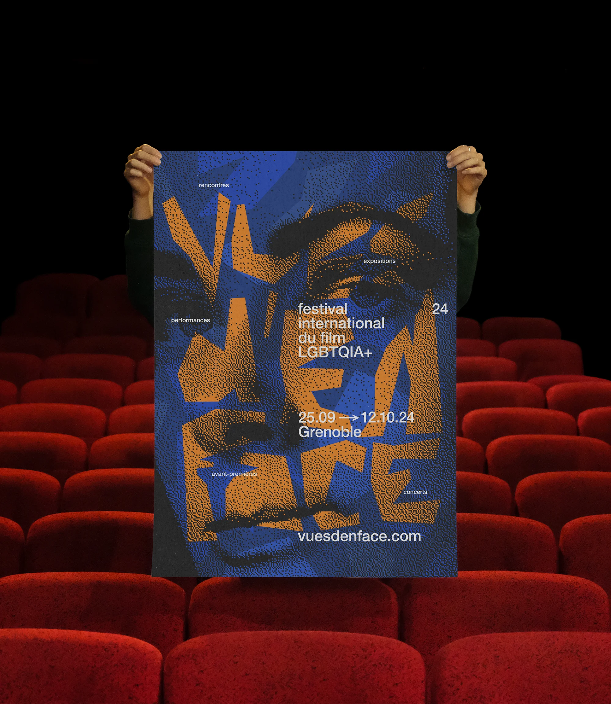
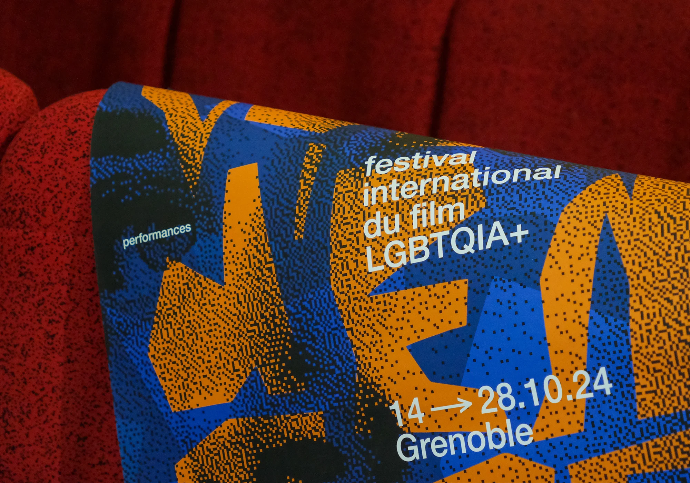
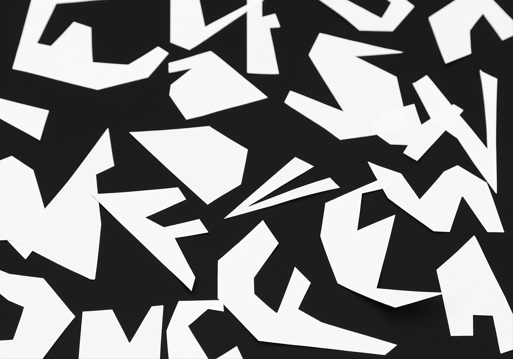
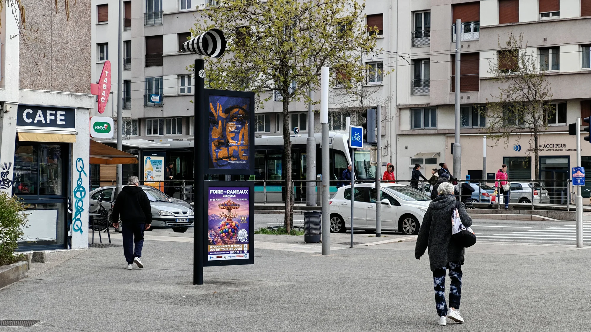

Vues d’en face
Affiche, 2024
Projet d’école
Affiche réalisée à l’occasion de la 24e édition du Festival International du Film LGBTQIA+ de Grenoble (proposition retenue).




Affiche, 2024
Projet d’école
Affiche réalisée à l’occasion de la 24e édition du Festival International du Film LGBTQIA+ de Grenoble (proposition retenue).